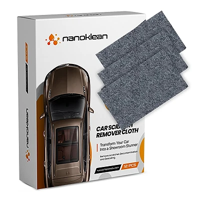
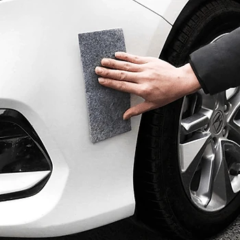

Was ist NanoKlean und wie funktioniert es?
NanoKlean ist ein Reinigungs- und Poliertuch, das laut der offiziellen Website mit Nanotechnologie arbeitet. Es soll Kratzer, Schrammen, Schlieren, Flecken und Schmutz mühelos entfernen, vor allem auf dem Autolack, aber auch auf Glas, Edelstahl, Elektronik und anderen Oberflächen im Haushalt. Die Verpackung auf den Produktbildern trägt die englische Aufschrift „Car Scratch Remover Cloth“.
Das Prinzip beschreibt der Hersteller so: Feine Nanofasern beziehungsweise Mikrofasern gleiten über die Oberfläche, lösen Schmutz, Fett und Fingerabdrücke und polieren leichte Oberflächenkratzer schonend weg. Dadurch soll der ursprüngliche Glanz zurückkehren. Laut Website reinigt NanoKlean ganz ohne aggressive Reinigungsmittel, und eine Kundin schreibt, dass sie das Tuch nur mit Wasser verwendet.
Als Vorteile nennt die Website streifenfreien Glanz, Reinigung ohne Chemie, vielseitige Einsetzbarkeit, Langlebigkeit und Wiederverwendbarkeit, Umweltfreundlichkeit und Schonung aller Oberflächen. Zusätzlich wird eine Farbauffrischung für Armaturenbrett und Küchengeräte versprochen. Der Hersteller spricht von über 2.000 zufriedenen Kunden und einer Bewertung von 4,9 Sternen.
Laut häufig gestellten Fragen ist das Tuch für alle Autolacktypen geeignet, einschließlich Klarlack, und soll die Oberfläche glätten, ohne den Lack zu beschädigen. Die Packung auf den Bildern enthält mehrere graue Tücher, sodass Sie für Auto und Haushalt getrennte Tücher verwenden können.
Zur Einordnung: Polier- und Kratzertücher für Autolack sind ein bekanntes Produkt. Sie können oberflächliche Kratzer in der Klarlackschicht, Schleifspuren von anderen Fahrzeugen und Verfärbungen mildern oder entfernen. Tiefe Kratzer, die bis in den Farblack oder die Grundierung reichen, lassen sich mit einem Tuch dagegen nicht beseitigen; dafür braucht es Lackstift oder Werkstatt. Für typische Alltagsspuren, etwa von Parkremplern, Einkaufswagen, Sträuchern oder Fingernägeln unter dem Türgriff, kann ein solches Tuch aber eine günstige und schnelle Lösung sein, bevor man über eine professionelle Aufbereitung nachdenkt.
NanoKlean Funktionen
Laut der offiziellen Website bietet NanoKlean:
Nanotechnologie: entfernt Schmutz, Fett und Flecken auf mikroskopischer Ebene.
Kratzerentfernung: poliert leichte Oberflächenkratzer weg und stellt den Glanz wieder her.
Vielseitige Anwendung: Autolack, Glas, Edelstahl, Elektronik und andere Oberflächen.
Schnelle Reinigung: makellose Oberflächen mit wenigen Wischbewegungen.
Farbauffrischung: frischer Glanz für Armaturenbrett und Küchengeräte.
Ohne Chemie: Reinigung ohne aggressive Reinigungsmittel, wiederverwendbar.
Auf den Produktbildern sind mehrere rechteckige, graue Tücher mit filzartiger Oberfläche und eine Faltschachtel mit Autobild zu sehen. Ein Vorher-nachher-Bild zeigt einen weißen Stoßfänger, an dem Schleifspuren nach der Behandlung verschwunden sind.
In einer Vergleichstabelle stellt der Hersteller NanoKlean herkömmlichen Reinigungsprodukten und aggressiven Chemikalien gegenüber, mit den Punkten Nanotechnologie, fussel- und streifenfrei, hochwertiges Material, vielseitige Anwendung, Umweltfreundlichkeit, Farbauffrischung und Reinigung ohne Chemie. Die Vergleichsprodukte werden nicht genannt. Angaben zu Material, Größe der Tücher, Stückzahl pro Packung in der deutschen Beschreibung und zur Zahl der möglichen Anwendungen fehlen auf der Website. Auch ob das Tuch mit einer Polierpaste getränkt ist oder rein mechanisch wirkt, erklärt die Seite nicht; laut Website kommt es jedenfalls ohne aggressive Reinigungsmittel aus.
NanoKlean Anwendung
Waschen Sie die betroffene Stelle vor der Anwendung gründlich und lassen Sie sie trocknen. Sand und Staub auf dem Lack können beim Polieren sonst neue, feine Kratzer verursachen. Arbeiten Sie am besten im Schatten und auf einer kühlen Oberfläche, nicht bei praller Sonne.
Reiben Sie den Kratzer mit dem Tuch und leichtem Druck in kleinen, kreisenden oder geraden Bewegungen. Prüfen Sie zwischendurch das Ergebnis und wischen Sie Rückstände mit einem sauberen Mikrofasertuch ab. Testen Sie das Tuch vorher an einer unauffälligen Stelle, besonders bei matten Lacken, Folierungen, Kunststoffteilen und empfindlichen Bildschirmen.
Laut häufig gestellten Fragen spülen Sie das Tuch nach jedem Gebrauch mit klarem Wasser aus und lassen es an der Luft trocknen. Weichspüler und Bleichmittel sollten Sie vermeiden, da sie die Nanofasern beschädigen können. Bei richtiger Pflege soll das Tuch bei vielen Anwendungen wirksam bleiben.
Allgemeine Hinweise: Ein Kratzer, an dem der Fingernagel hängen bleibt, ist meist zu tief für ein Poliertuch. Verwenden Sie für Bildschirme und Brillengläser lieber ein spezielles, weiches Mikrofasertuch, wenn Sie unsicher sind, ob das Tuch zu rau ist. Bewahren Sie die Tücher sauber und trocken in der Verpackung auf, damit keine Schmutzpartikel hängen bleiben.
NanoKlean – Rückerstattung
Laut der offiziellen Website gilt eine 30-Tage-Geld-zurück-Garantie. Wenn Sie mit NanoKlean nicht zufrieden sind, können Sie das Paket innerhalb von 30 Tagen ab Erhalt der Bestellung zurückschicken. Der Hersteller schreibt, er sei überzeugt, dass Sie NanoKlean genauso lieben werden wie über 2.000 zufriedene Kunden.
Für die Einzelheiten verweist die Website auf ihre Richtlinie zu Rückgabe und Rückerstattung im Fußbereich der Seite. Dort finden Sie außerdem einen Link zum Widerruf des Vertrags, die Kontaktseite, die Nutzungsbestimmungen, die Datenschutzbestimmung und das Impressum. Bei Verkäufern dieser Art müssen Rücksendungen üblicherweise vorher beim Kundenservice angemeldet werden, und benutzte Tücher können je nach Richtlinie von der Rückgabe ausgeschlossen sein.
Laut häufig gestellten Fragen werden alle Bestellungen innerhalb von 48 Stunden nach Bestellbestätigung versandt. Sie erhalten eine E-Mail mit der Sendungsverfolgungsnummer und einem Link, über den Sie den Status verfolgen können. Die Standardlieferung dauert je nach Standort 5 bis 12 Werktage, in der Hochsaison oder bei schlechtem Wetter etwas länger.
Für Verbraucher in der EU gilt zusätzlich das gesetzliche Widerrufsrecht von 14 Tagen, unabhängig von der freiwilligen Garantie. Bewahren Sie die Verpackung und die Bestellbestätigung auf und testen Sie zunächst nur ein Tuch, damit Sie bei Unzufriedenheit die übrigen unbenutzt zurückschicken können. Notieren Sie bei einer Rücksendung die Sendungsnummer.
NanoKlean Kundenbewertungen
-
Markus R.Verifizierter Kauf
„Ich habe es für alles benutzt, von meiner Küchenarbeitsplatte bis zu meinen Autoscheiben, und es reinigt hervorragend. Besonders beeindruckt hat mich, wie gut es Schlieren und Fingerabdrücke entfernt.“
-
LindaVerifizierter Kauf
„Anfangs war ich skeptisch, aber das NanoKlean Nano-Tuch hält, was es verspricht. Ich nutze es für Spiegel und Fenster, und alles wird kristallklar, ohne Fusseln oder Streifen.“
-
MaraVerifizierter Kauf
„Dieses Tuch benötigt keinerlei Reinigungsmittel, nur Wasser. Es funktioniert besonders gut auf Glas und Edelstahl, und selbst das Armaturenbrett meines Autos reinigt es mühelos.“
NanoKlean – Wo kaufen?
NanoKlean wird über die offizielle Bestellseite get-nanoklean.com verkauft. Dort finden Sie die Übersicht, die Eigenschaften, den Vergleich, die Kundenbewertungen und die häufig gestellten Fragen, und Sie wählen direkt die Anzahl der Packungen.
Kratzertücher für Autolack in sehr ähnlicher Aufmachung werden von vielen Anbietern verkauft, oft mit identischen grauen Tüchern und unter wechselnden Namen. Bei Angeboten auf Marktplätzen ist nicht sicher, ob es sich um dasselbe Produkt handelt, und die 30-Tage-Garantie des Verkäufers gilt dort in der Regel nicht.
Die Bestellseite arbeitet mit Hinweisen auf knappe Lagerbestände und ein bald endendes Angebot. Lassen Sie sich davon nicht drängen. Prüfen Sie vor dem Abschluss die Bestellübersicht, die Anzahl der Packungen, das Land und die Versandkosten. Achten Sie darauf, dass Sie sich wirklich auf get-nanoklean.com befinden, denn nur dort gelten die Bedingungen des Verkäufers. Da die Website die Stückzahl pro Packung nicht im Text nennt, lohnt sich ein genauer Blick auf die Paketbeschreibung im Bestellformular, bevor Sie mehrere Packungen wählen.
Um sicherzugehen, dass Sie das Originalprodukt erhalten, besuchen die meisten Nutzer die offizielle Website.
Ist NanoKlean Betrug?
Nach den verfügbaren Informationen gibt es keinen Hinweis darauf, dass NanoKlean Betrug ist. Das Tuch wird über eine eigene Bestellseite mit Funktionsbeschreibung, Vergleich, Kundenbewertungen, häufig gestellten Fragen, Rückgaberichtlinie, Widerrufslink und Impressum verkauft. Die Seite gehört zum selben Shopsystem wie andere Produkte der Label Products B.V. aus den Niederlanden.
Positiv sind die 30-tägige Geld-zurück-Garantie, der Versand innerhalb von 48 Stunden mit Sendungsverfolgung, die Pflegehinweise in den häufig gestellten Fragen und die realen Anwendungsfotos auf der Bestellseite.
Es gibt aber Punkte, die Aufmerksamkeit verdienen. Begriffe wie „Nanotechnologie“ werden nicht erklärt, und die Aussage, das Tuch entferne Kratzer, gilt realistisch nur für oberflächliche Kratzer und Schleifspuren. Angaben zu Material, Tuchgröße und Stückzahl fehlen im deutschen Text, die Vergleichstabelle nennt keine echten Konkurrenzprodukte, und Angaben wie 4,9 Sterne lassen sich nicht überprüfen. Die Bestellseite nutzt außerdem Lagerhinweise als Verkaufsdruck.
Vorsicht ist bei sehr ähnlichen Tüchern auf anderen Plattformen geboten, denn dort ist oft unklar, wer der Verkäufer ist und welche Garantie gilt.
Wer realistische Erwartungen hat, das Tuch zuerst an einer unauffälligen Stelle testet und direkt auf der offiziellen Website bestellt, geht nach heutigem Stand kein besonderes Risiko ein. Bei tiefen Lackschäden bleibt der Gang zur Fachwerkstatt die sicherere Lösung.
Wer Produktdetails überprüfen oder die aktuelle Verfügbarkeit prüfen möchte, ist auf der offiziellen NanoKlean-Website am sichersten aufgehoben.
